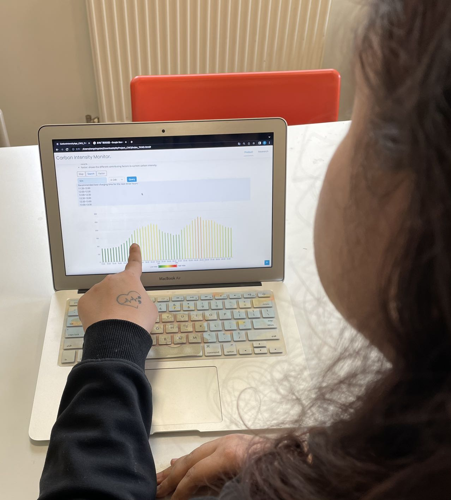
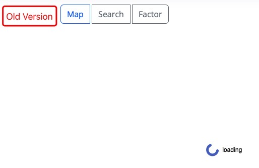
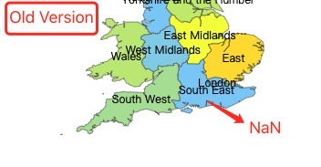
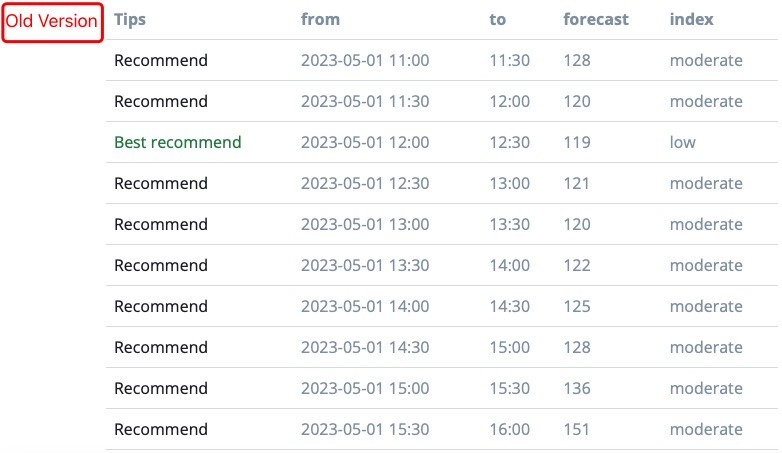
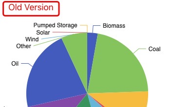

Research
Nowadays, many people express their opinions on Twitter, especially those who are particularly concerned about climate change. They represent a specific large group, expressing their voices, views on natural climate change, and ideas for improving its negative outcomes.
- Background
-
As carbon emissions increase, the climate is impacted in several ways. The most significant impact is global warming, which occurs when the increasing levels of carbon dioxide and other greenhouse gases in the atmosphere trap more heat from the sun, causing the Earth's temperature to rise.
This rise in temperature leads to a range of climate changes, including: More extreme weather events such as heatwaves, droughts, floods, and hurricanes. Rising sea levels due to the melting of glaciers and ice sheets, which can lead to coastal flooding and erosion. Changes in precipitation patterns, which can impact agriculture and water resources. Loss of biodiversity, as species are unable to adapt to the changing climate.
These climate changes will have a significant impact on our lives. For example:
- Health: Extreme weather events can lead to health impacts such as heat stroke, respiratory problems, and waterborne diseases.
- Agriculture: Changes in precipitation patterns and temperature can lead to decreased crop yields and food shortages.
- Water resources: Changing precipitation patterns can lead to water scarcity and competition for resources.
- Economy: Extreme weather events can lead to damage to infrastructure and property, which can have a significant economic impact.
In summary, as carbon emissions increase, the climate will continue to change in ways that will have a profound impact on our lives, health, and economy. It is important to take action to reduce emissions and mitigate the impacts of climate change.
- Interview
-
I found 10 participants for webpage function testing and interviewed them about their views on carbon emissions and climate change.
Among them, 3 did not have much knowledge about carbon emissions and were not aware of the impact of climate change on their lives. 2 had read related news and knew that carbon emissions could affect the climate, leading to poor air quality that could impact human life. 5 had a clear understanding of how climate change affects human life and even the entire society, and they were paying attention to information on carbon emissions. They believed that taking personal action could reduce carbon emissions to some extent and alleviate the severe problems caused by climate change.
- Function Test
-
Regarding the usefulness of the website's functions, I have fixed 3 versions.
- The webpage performance was slow, so I optimized the response time. 
- The Map module often returned incorrect values of NaN. After checking, I found it was due to errors in city names that could not be matched. 
- In the Search module, the search results were displayed in a list form, which was not very concise and convenient for users, so I changed it to a visual vertical bar chart.By changing colors, users could easily identify the lowest value of a certain time period. 
- In the Factor module, there were repeated colors in several parts of the original pie chart. To better distinguish them, I adjusted them to different colors, without repetition. 